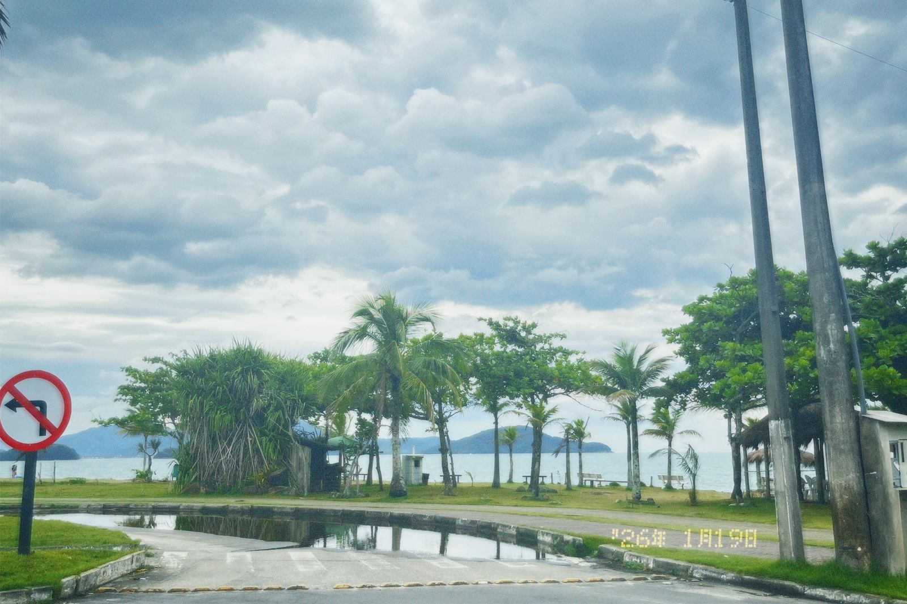
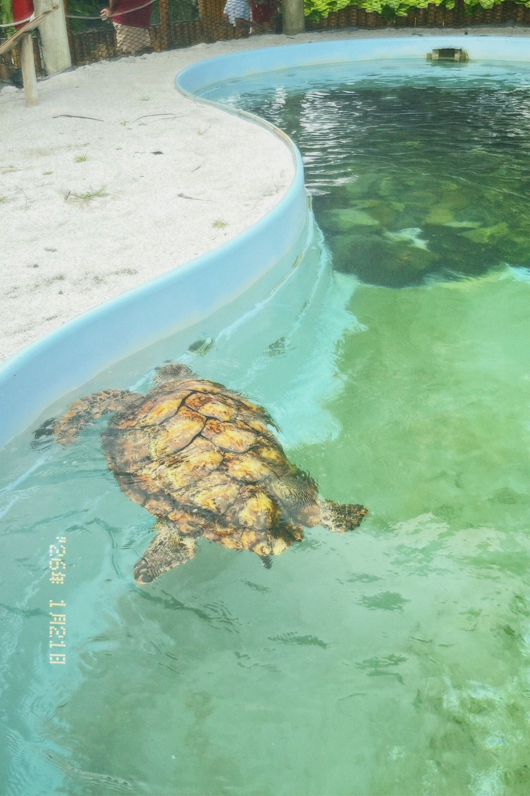
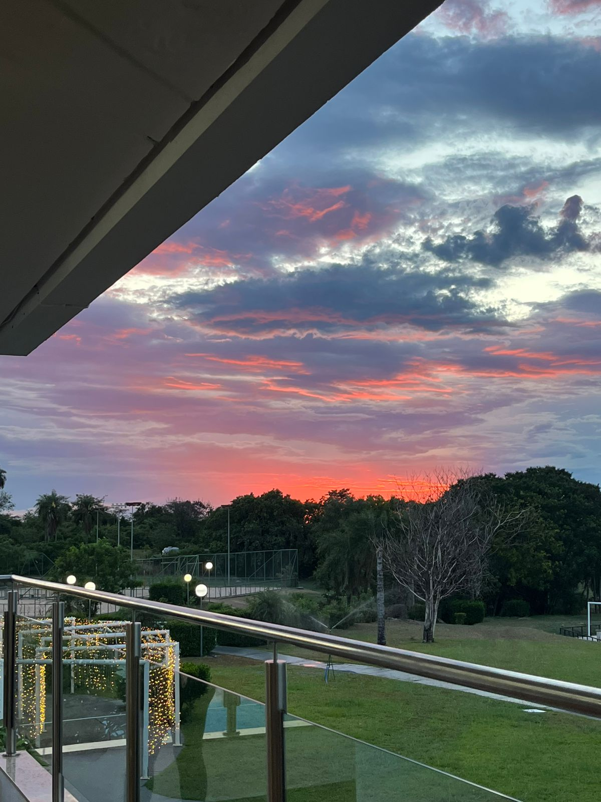
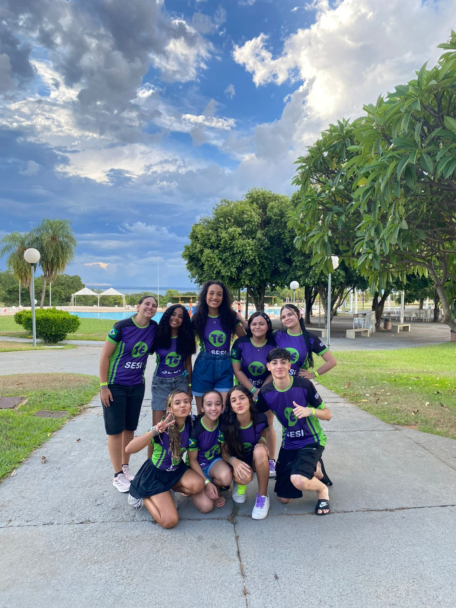
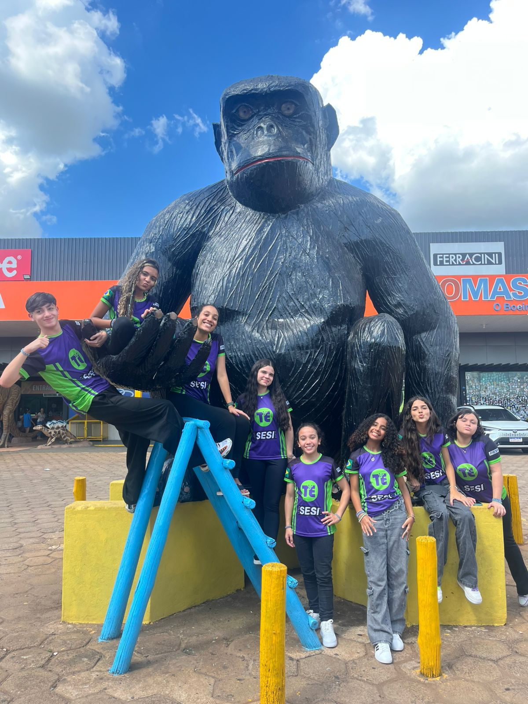
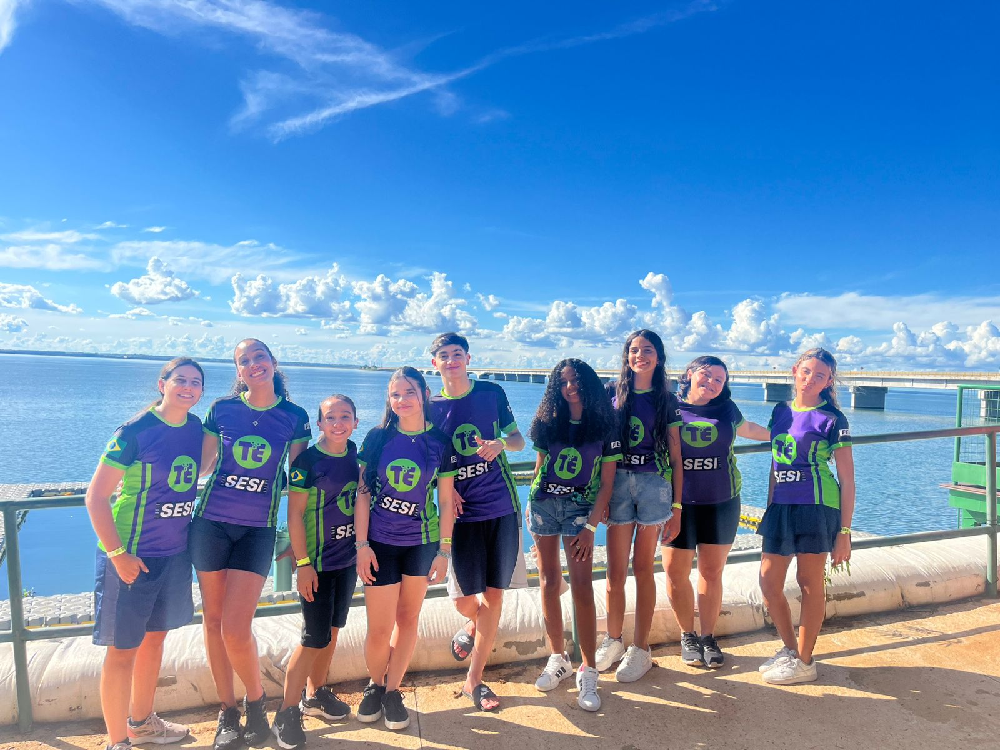
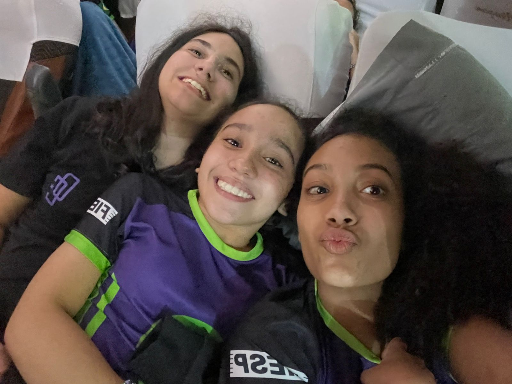
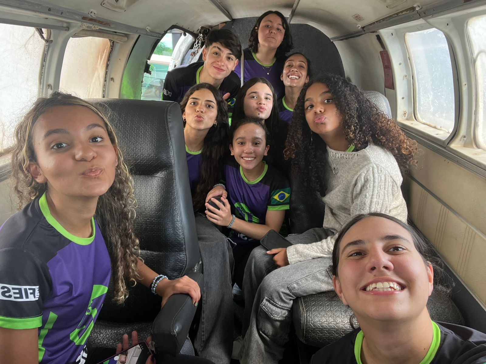

Minhas Aventuras de Férias
Descubra os lugares incríveis que visitei: Ubatuba e Presidente Epitácio!
Ubatuba - SP
Paraíso no Litoral Norte
Ubatuba foi simplesmente maravilhosa! Conheci praias incríveis com águas cristalinas e areia branca. A natureza exuberante da Mata Atlântica cercando as praias tornou a experiência ainda mais especial.
Viagem em Família
Esta viagem foi muito especial porque pude passar momentos incríveis com minha família. Aproveitamos juntos as praias, fizemos trilhas e criamos memórias inesquecíveis!
Destaques da viagem:
- Praia do Félix - Perfeita para mergulho
- Praia Grande - Ótima para surf
- Praia do Cedro - Tranquilidade absoluta
- Gastronomia local deliciosa

Vista deslumbrante de uma das praias de Ubatuba
Galeria de Fotos - Ubatuba

.jpeg)


Presidente Epitácio - SP

Pôr do sol espetacular às margens do Rio Paraná
A Capital do Sol Poente
Presidente Epitácio me surpreendeu com seus pores do sol incríveis no Rio Paraná! A cidade tem um charme único, com praias de água doce e um clima super agradável.
Treinamento SESI - Equipe de Robótica
Esta viagem foi realizada pelo SESI como um treinamento intensivo com minha equipe de robótica. Além de aprender muito sobre programação e mecânica, fortalecemos nosso trabalho em equipe e criamos laços incríveis entre os membros da equipe!
Experiências inesquecíveis:
- Pôr do sol no Mirante do Rio Paraná
- Praia artificial com estrutura completa
- Pescaria e passeios de barco
- Churrasco típico do interior paulista
Galeria de Fotos - Presidente Epitácio





Quer saber mais?
Adorei compartilhar minhas experiências! Se você também visitou esses lugares ou quer dicas, entre em contato!